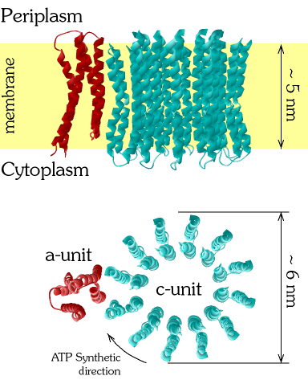
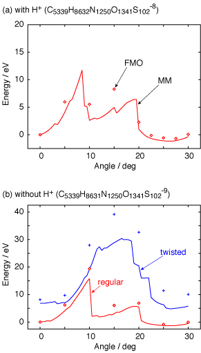

Sep. 14, 2006
F0-ATPase is a brownian motor, which is drived by the proton concentration gradient across the membrane. As protons flow into cells, the c-unit rotates clockwise. The mechanical power is transferred to F1-ATPase connected beneath (not shown), where ATP molecules are synthesized.

The potential energy curves of the F0-motor system are drawn along the rotational motion of the c-unit. Geometries are prepared by restricted geometry optimization at the Molecular Mechanics (MM) level of theory. Three sets of geometries are generaged: one of the c-subunit is protonated (upper) or unprotonated (lower), and takes regular form (red) or twisted form (blue). The MM curves are drawn by solid lines, while FMO calculations are plotted by symbols.

Note that not all of the FMO calculations were done on the PRAGMA testbed. The testbed was used to calculate the unprotonated-regular points, and the high-precision protonated-regular calculations are now going on.